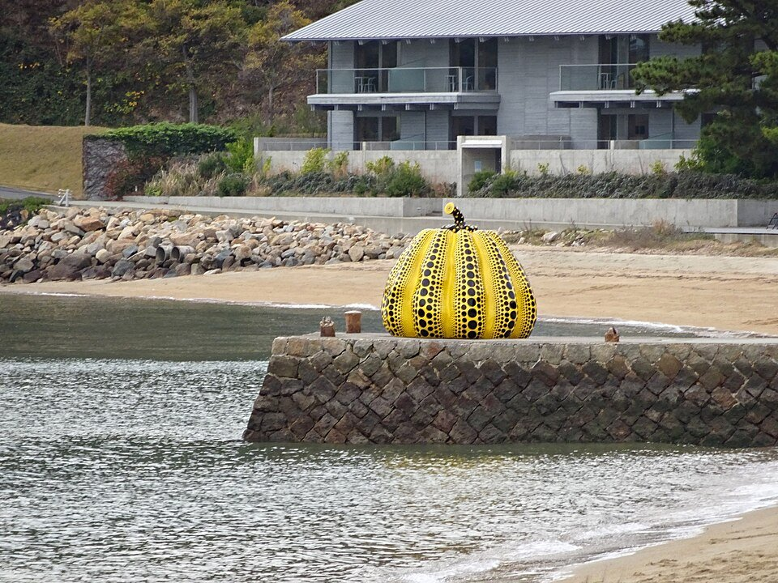

Pumpkin
Yayoi Kusama · 1994 (reinstalled 2022) · Fibreglass-reinforced plastic · 2.5 m
In copyright. Look and learn: shown for study, not for download. · Photo: ブルーノ・プラス, CC BY 4.0
Kusama made the yellow pumpkin after the 1993 Venice Biennale, where she was the first woman to represent Japan alone in its pavilion. The 2.5-metre sculpture, cast in fibreglass-reinforced plastic, was installed on a pier on the island of Naoshima in 1994. A typhoon destroyed it in 2021, and it was reinstalled in 2022. She drew pumpkins as a child; her family owned a plant nursery and seed farm.